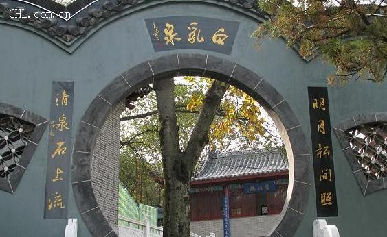

第一天
第一站:三汊河湿地
简介：
三汊河湿地处于淮河流域中部、安徽省中北部，是淮河流域湿地中保存较好的一块未受污染的自然湿地。湿地类型丰富，有沼泽湿地、湖泊湿地、河流湿地和库塘湿地，在淮河流域具有一定的典型性和代表性。
| 门票价格： | 免费 |
| 建议游玩时间： | 两小时 |

第二站:蚌埠闸水利风景区
简介：
景区以宏伟的蚌埠闸水利枢纽工程为依托，集湿地公园、别墅旅游度假、会务商贸洽谈、水利工程观光和公众科普教育为一体，素有“淮河上的葛洲坝”之称。
| 门票价格： | 免费 |
| 建议游玩时间： | 三小时 |
第三站:南山古玩玉器城
简介：
该市场依托蚌埠玉器加工和仿古青铜器制作基地，以及灵璧奇石出产地的优势，拥有总经营面积15000平方米，底层拥有室内铺位200多个，二层新辟2000平方米的营业大厅和150个特色铺位。曾被评为全国十大古玩市场，规模及影响居华东第一位。
| 门票价格： | 免费 |
| 建议游玩时间： | 两小时 |
第四站:海洋乐园
简介：
蚌埠海洋乐园位于蚌埠花鼓灯嘉年华乐园门口，展示面积6000平方，为皖北首家海洋主题乐园。乐园由梦幻水母、 海底隧道、璀璨珊瑚、神奇极地、美人鱼剧场、海狮剧场、热带雨林生物、两栖爬行馆、触摸池、奶瓶喂鱼、水世界等各具特色的场馆组成。
| 门票价格： | 80元 |
| 建议游玩时间： | 一小时 |
第二天
第一站:白乳泉

简介：
白乳泉背依荆山，面临淮水，卞和洞以谷为邻。周围峰峦叠翠，榴林似海，绿树掩映，芳草如茵，白乳泉是远近闻名的天然佳境。白乳泉原名白龟泉，相传唐贞元年间，泉内曾有白龟流出，因此得名。
| 门票价格： | 20元 |
| 建议游玩时间： | 一小时 |
第二站:花鼓灯嘉年华

简介：
花鼓灯嘉年华是蚌埠乃至皖北最大的综合性文化旅游区，位于蚌埠市陶山西麓。作为目前国内最具探索性的文化旅游综合开发项目，花鼓灯嘉年华注重吸纳传统地域文化元素，通过多种手段展示及系统开发国家级非物质文化遗产——花鼓灯文化精髓，保护、传承和发展花鼓灯艺术，创造了现代旅游休闲与传统非遗文化深度融合的文化产业开发新模式。
| 景点级别： | AAAA级 |
| 门票价格： | 120元 |
| 建议游玩时间： | 八小时 |